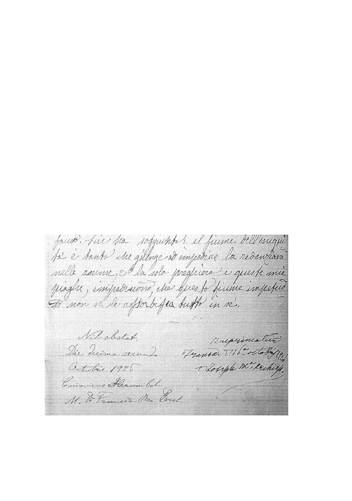

NIHIL OBSTAT
Beato Annibale M. Di Francia.
12 Octubre de 1926
Puede Imprimirse
Arzobispado Guadalajara Jal.,
23 de noviembre del 2010
Mons. J. Gpe Ramiro Valdés Sánchez
Vicario General
IMPRIMATUR
Excmo. Sr. Giuseppe M. Leo, Arzobispo de
la diócesis de Trani – Barletta – Bisceglie
16 Octubre 1926
Se anexa copia del Nihil Obstat y del Imprimatur puestos en uno de los volúmenes